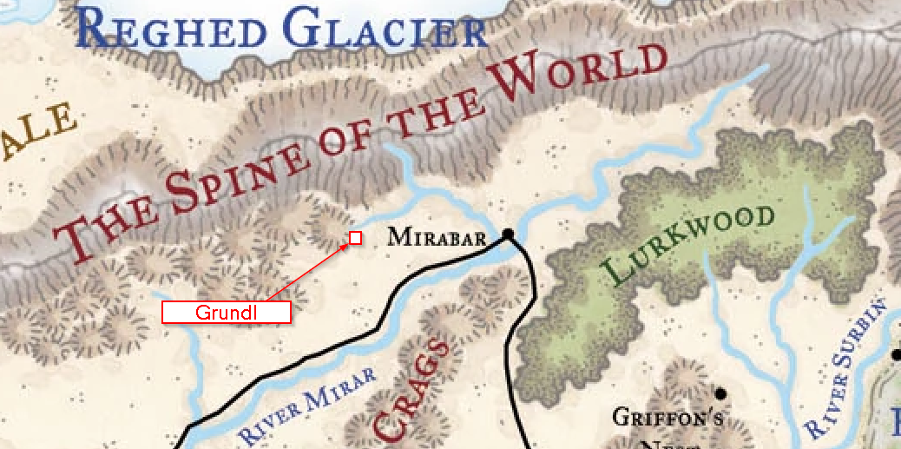

BooBah D&D

Welcome to the BooBah DND homepage. The purpose of this site is to track the exploits of your adventuring party
and provide information about the world they explore.
Below are the chronicles of the party's exploits:
Heading south to the trade boat Dothmar notices a fellow dwarf impaled on the front of the boat.
Guinesie and Yugio investigate while the rest of the party convinces Redbeard not to blow their
cover. The boat has more slain dwarves on deck, apparently squashed, a dwarf limb has been used
as a writing tool for scrawling out the name "Krang Gang" in giant. A tree has been pushed over
onto the boat and tracks of gnolls, a giant, some ogres, and several chests can be seen moving
away into the forest. The party debates for a time before heading onto the boat and finding one of the
dwarves is still alive. Helm revives him but he is in shock. Below decks the companions learn
that 4 of their 8 chests of goods have been stolen!
Opting to pursue the the theives the party travels into the forest. Soon they come upon the mashed bodies of
4 gnolls, a chest of loot, and one dead ogre. They hide the chest and continue following the tracks.
Reaching the base of a gentle slope the group catches wind of a foul odor, and is certain the theives
are nearby. Reconnaissance reveals two ogres and a hill giant gathered around a gnoll roasting over
a fire. The party then plans a "flanking" manuever and charge down upon the monsters, slaying them
without much trouble.
The party has now recovered all the stolen chests, but they must get them back to the ship... or
maybe they'll do something else - who can tell? We'll find out next session!
Yugio hopes to find tresure amongst the toads but decides against digging through the shit pit
where they disgorge all the undigestables they consume. A blue skinned orc claw his way out of one of the slain
toads and introduces himself as Obolo, cheif of Grundl. The companions speak with
him and convince him to return to Grundl with them.
On the way out of the chasm an albino raven with an petulent female blue orc head lands above the party and heckles them.
Her taunting reveals that she is Obolo's sister, Witchita, and that she is appentice to local
sorcerer name Frostberg. Guinesie and Qautlz quickly tire of her boasting and blast her. She flees
and shortly after a bizzare jellyfish-like floating creature attacks the party, badly wounding Qatzl before being destroyed.
Getting back to town is easy with Obolo as a guide, and the party discovers that the town is deserted - except for
several ogre and gnoll maruaders and an insane Findl. Yugio releases Findl from his cell and watches as he rushes
out of town and onto the ledge. In a panic Findl cries out that he has "missed the great migration, no, never, there
is still time!", then Findl leaps from the ledge and plunges to his death in the river below.
Back outside of town the group exchanges some telegrams with an irate Broglin who wants
mentions that the trade boat is docked an hour south of town.
Just outside of town, surrounded by the mob of raptururous villagers, the party decides the best thing to do is leave to look
for Obolo. Before leaving Yugio wants to see Malfred naked and skillfully rips away his clothing - there is little to see
however. Qautlz then throws down a leaf that sprouts into a massive oak, sending Malfred up into the air of its branches.
Redbeard Bronzebeard is able to lead the party to the chasm of the ice toads. Coen take the form of a small ice toad
and enters the cave but chokes when one of the 8 toads in the cave abruptly asks her "What Tribe?". A battle ensues with Coen
being nearly killed by the toad bites, and Yugio being breifly consumed.
After the fray, with the toads all slain, the companions notice the mightest of the toads is still moving. Someone appears to
be crawling out of its mouth!
Traveling out to the promontory where Malfred asked them to go, the companions witness the orc incanting. Soon a wrathful water elemental
is summoned and the party begrudgingly aids him against it. As soon as the elemental is destroyed another composed of air takes its place,
and then one of earth, and finally one of fire. With these four forces destroyed Malfred thanks the party and asks them to return with him
as heroes to Grundl.
A crowd of fifty orcish tradespeople meet the party and Malfred a quarter mile outside of town and Malfred introduces the party to the crowd
favorably. The faces of the assembled townfolk are eerily blissful. The party is uneasy.
The party meets with several local VIP's including Findl, the towns gnomish burgomeister and head
of finance; Malfred, a charismatic orc seeking to free the town's working class from the oppression
of Findl. They also learn about the town's absent cheif, Obolo, who is currently out meditating
with toads. This is soon taken to mean "frolicking in the forest" by the party.
During the exchange of seafood for Grundl's arms and armor a crate of sea urchins is discovered missing. The party
bullies one of the ship workers to find out a local chef is planning to create a delicious meal out of them. Traveling
to the home of the chef the party is surprised by him leaping out of a window - but they soon capture him and recover almost
all of the urchins.
The group then decides to visit Malfred on the following day to witness his miracle of nature outside of town.
The companions have beat down the hobgoblins that attacked the ship and continue along the River Surbin toward Grundl,
town of unusually industrious orcs. A few days later the river becomes partially frozen and two Yeti leap from
a neaby tree into the boat. One yeti is a red-bellied and the other is blue-bellied. The party murders them both and harvests them for
craklins, horn aphrodisiacs, and fur. Qatzl sells the captain of the ship some urine as an aphrodisiac.
Arriving in Grundl, the companions find board at Curler's Inn, where they meet a drunken dwarf named
Redbeard Bronzebeard as well as Curlers. The orc proprietor missing one of two lower tusks (the remaining tusk has a fine curl).
Dothmar attempts to seduce a cloaked female and is viciously stabbed by her. The companions attack her until she lays dead and discover
she is terribly scarred and her lips are sewn shut.
Map of Local Area:

Adventure Chronicles
Session 6: Krushing Krang's Gang
Session 5: Meeting Obolo
Session 4: Toad Trouble
Session 3: Assisting Malfred
Session 2: Who's Who in Grundl
Session 1: Reaching Grundl